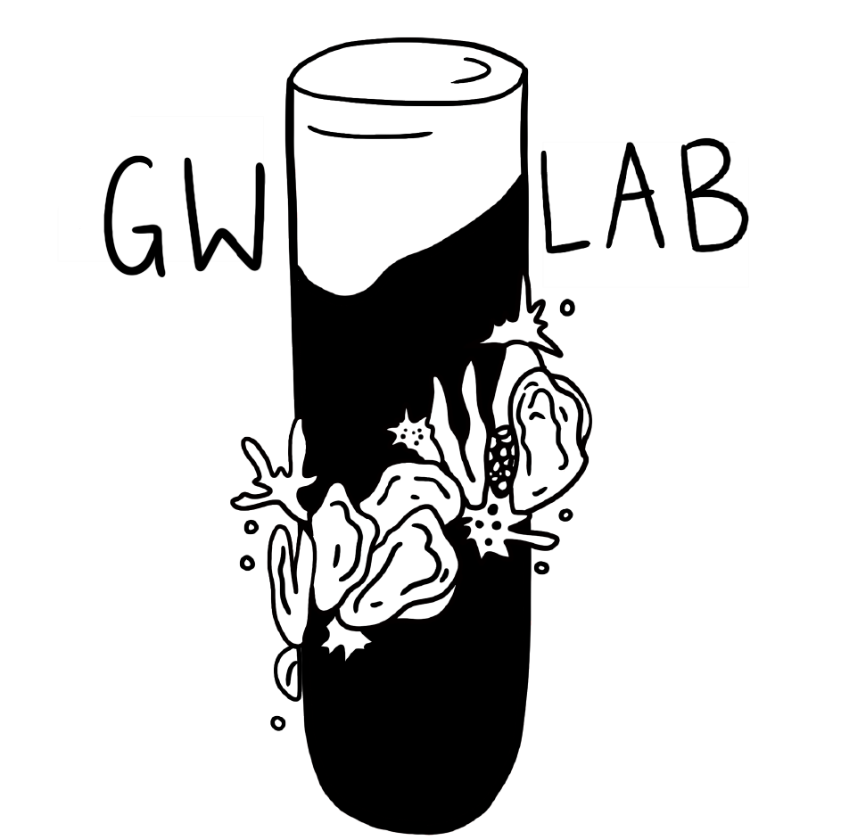

Massachusetts Coastal Water Quality
Continuous high-frequency environmental monitoring across Massachusetts estuaries and tidal rivers. We deploy submersible HOBO data loggers to track temperature, salinity, dissolved oxygen, pH, and tidal water levels to understand estuarine dynamics and coastal ecosystem health.
About the Sensor Network
Submersible HOBO conductivity, dissolved oxygen, pH, and water level loggers record measurements every 15 minutes.
Out-of-water deployment intervals are automatically filtered using logger water-detect flags.

—
logger sites
—
verified readings
—
latest logger offload
Explore the sites
Select a site on the map or filter pills to inspect average conditions.
Loading site metadata and logger CSVs...
Water chemistry over time
Compare water quality metrics across selected sites and time windows.